Diese Onlinehilfe erklärt die Funktionsweise des Plug-ins Huffman-Kodierung.
Inhaltsübersicht:
1) Registerkarte Komprimierung/Dekomprimierung und Szenario-Auswahl
2) Registerkarte Huffman-Baum
3) Registerkarte Code-Tabelle
4) Bedeutung der Icons in der Menüleiste
5) Quellen
Das Plug-in Huffman-Kodierung lässt sich über das Menü Visualisierungen oder über den Krypto-Explorer im Tab Visualisierungen starten.
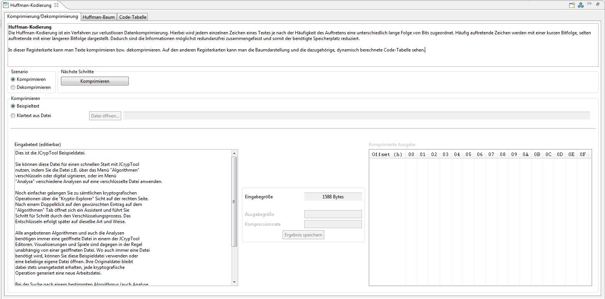
Das Plug-in besteht aus drei Registerkarten: Komprimierung/Dekomprimierung, Huffman-Baum und Code-Tabelle.
1) Auf der ersten Registerkarte Komprimierung/Dekomprimierung hat man zwei Szenarien, aus denen man wählen kann:
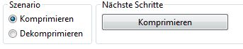
In diesem Szenario geht es um die Komprimierung von Text. Dabei hat man die Möglichkeit, den Text entweder aus einer Textdatei (.txt) zu laden, oder manuell in das Feld Eingabetext einzugeben.
a) Standardmäßig ist der Modus mit manueller Texteingabe aktiviert. Dabei wird bereits ein Beispieltext eingefügt. Dieser kann beliebig modifiziert oder ersetzt werden. Dabei sind rudimentere Tastaturkürzel zur Bearbeitung von Text verwendbar. Damit der Button Komprimieren verfügbar ist, muss zumidnest ein Zeichen eingegeben werden.
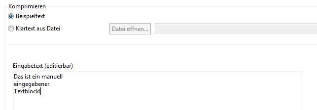
Je nach Länge der Eingabe wird das Informationsfeld in der Mitte aktualisiert. Später nach abgeschlossenem Vorgang findet sich in diesem zusätzliche Information zu Länge der komprimierten Ausgabe und Kompressionsrate.
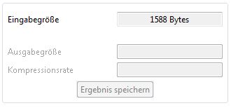
b) Das Laden einer Datei funktioniert folgendermaßen: Zuerst den Punkt Klartext aus Datei auswählen, um den Modus zu wechseln. Per Klick auf den Button Datei öffnen... wird der Dateiauswahl-Dialog geöffnet und Textdateien (ISO-8859-1) können geladen werden. Nachdem man die Datei ausgewählt hat, wird der Inhalt der Datei in das Feld Eingabetext geladen und der Button Komprimieren wird aktiviert. Die Dateigröße wird im Informationsfeld in der Mitte angezeigt. ISO-8859-1 ist ein Standard zur Zeichenkodierung mit acht Bit.
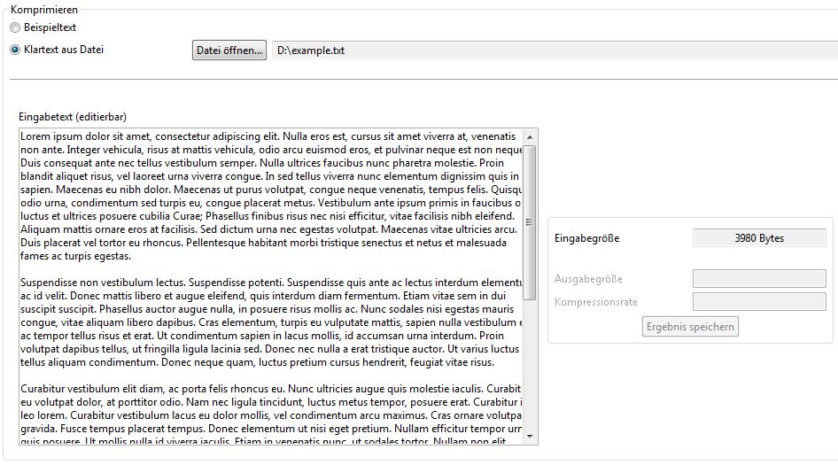
Durch Klick auf den Button wird der Text im Feld Eingabetext komprimiert. Nachdem der Vorgang abgeschlossen ist, wird eine Erfolgsmeldung angezeigt.
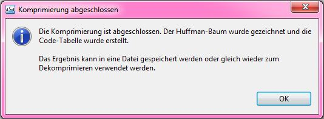
Die Ausgabe der komprimierten Daten in binärer Form erfolgt über eine simple Tabelle. Sie sind in hexadezimaler Form aufsteigend adressiert
eingetragen. Die erste Spalte und die erste Zeile dienen zur Nummerierung der Bytes, pro Zeile jeweils 16 (0xF) Bytes.
Die Darstellung scheint auf den ersten Blick länger als der ursprüngliche Text. Das liegt daran, dass die
visuelle Darstellung in hexadezimaler Form mehr Platz benötigt. Der Vergleich an Länge vor und nach der Komprimierung in Byte wird
im Infofeld in der Mitte aktualisiert. Außerdem gibt die Kompressionsrate an, um wie viel Prozent die Ausgabe reduziert werden konnte.
Beachten Sie, dass bei kurzen Texten die komprimierte Ausgabe länger als der Eingabetext sein kann.
Das geschieht, wenn Statusinformation zur Komprimierung (Overhead) mehr Platz benötigt, als durch
Komprimierung gewonnen wird. Dann ist auch die Kompressionsrate negativ.
Über den Button Ergebnis speichern kann per Speicherdialog eine binäre Ausgabedatei mit der Dateiendung .huffman
erzeugt werden.
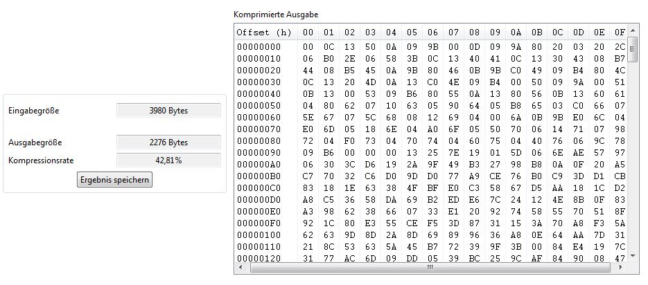
Nun kann das Ergebnis im Szenario Dekomprimieren direkt wieder zurückkonvertiert, oder für später aufgehoben werden. Beachten Sie, dass diese Form der Huffmankomprimierung nicht mit Implementierungen anderer Software kompatibel sein muss. Verwenden Sie die erzeugte .huffman-Datei nur mit JCrypTool.
In diesem Szenario können komprimierte Daten wieder in den ursprünglichen Zustand dekomprimiert werden. Es gibt zwei Optionen: Entweder kann eine unmittelbar zuvor komprimierte Ausgabe wieder rückgewandelt werden (etwa zur Überprüfung), oder es kann eine bereits bestehende Datei mit Endung .huffman geladen werden.
a) Standardmäßig ist der Modus Von "Komprimieren" übernehmen ausgewählt. Haben Sie bereits in dieser Sitzung eine Komprimierung durchgeführt, wird die letzte Ausgabe automatisch befüllt und kann wieder dekomprimiert werden. Sind keine Daten vorhanden bleibt das Feld leer und der Button Dekomprimieren ist nicht aktiv.
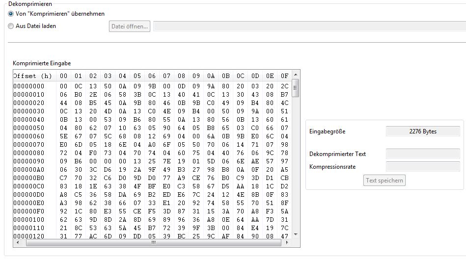
b) Zum Laden einer bereits gespeicherten Datei in den Modus Aus Datei laden wechseln. Der Button Datei öffnen
wird aktiviert und erlaubt per Dialog das Laden einer .huffman Datei. Information zur geladenen Binärdatei werden im Infofeld ergänzt.
Der Button Dekomprimieren ist nun aktiv.
Beachten Sie, dass diese Form der Huffmankomprimierung nicht mit Implementierungen anderer Software kompatibel sein muss. Verwenden Sie daher
nur von JCrypTool erzeugte .huffman-Dateien.
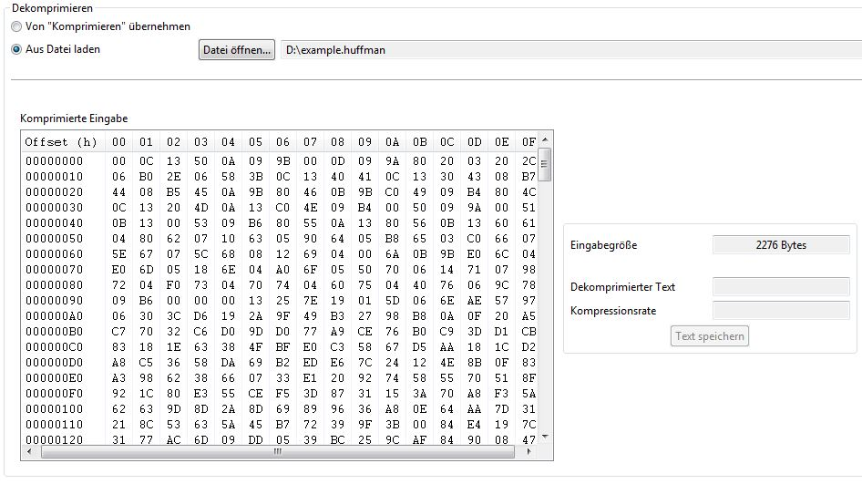
Durch Klick auf den Button  werden die Daten dekomprimiert und der rekonstruierte Text
in dem Feld Dekomprimierte Ausgabe angezeigt Zusätzlich wird Information zu Größe der Ausgabe und Kompressionsrate
ergänzt. Der Button Text speichern öffnet einen Dialog zum Speichern der Ausgabe als Textdatei.
werden die Daten dekomprimiert und der rekonstruierte Text
in dem Feld Dekomprimierte Ausgabe angezeigt Zusätzlich wird Information zu Größe der Ausgabe und Kompressionsrate
ergänzt. Der Button Text speichern öffnet einen Dialog zum Speichern der Ausgabe als Textdatei.
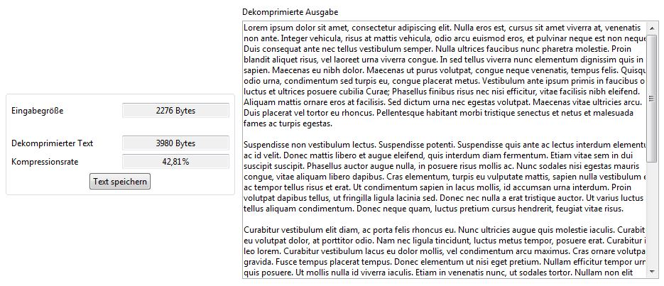
2) Nach erfolgreicher Komprimierung bzw. Dekomprimierung , wird auf der zweiten Registerkarte (Huffman-Baum) die Baumstruktur graphisch dargestellt.
Der Huffman-Baum ist ein Binärbaum, der seine Informationen an seinen Blättern trägt. Die Blätter sind grün markiert und stellen die ASCII-Zeichen des Eingabetextes dar.
Auf den Kanten des Graphen werden die Bits 1 oder 0 dargestellt, die zusammen das Codewort für das jeweilige Zeichens ergeben.
Beim Wurzelknoten und bei den inneren Knoten des Baums, der durch Komprimierung erstellt wurde,
werden die Wahrscheinlichkeiten der Zeichen dargestellt. Bei einem Baum, der durch
Dekomprimieren erzeugt wurde, werden der Wurzelknoten bzw. die inneren Knoten als leere Knoten dargestellt, da in diesem
Fall keine Wahrscheinlichkeiten berechnet werden.
Im rechten, oberen Eck des Fensters befindet sich eine Zoomoption. Über das Auswahlmenü  lässt sich eine Zoomstufe in Prozent einstellen.
lässt sich eine Zoomstufe in Prozent einstellen.
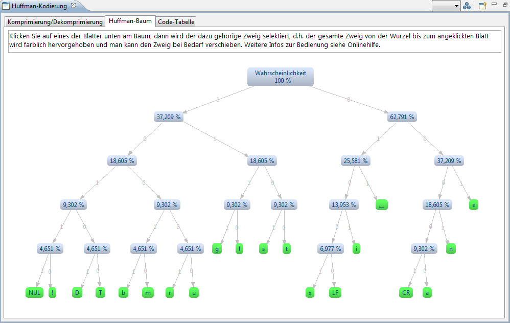
Wird der Mauszeiger über ein Blatt bewegt, erscheint der Pfad des Zeichens. Dieser ist zugleich das binäre Codewort.
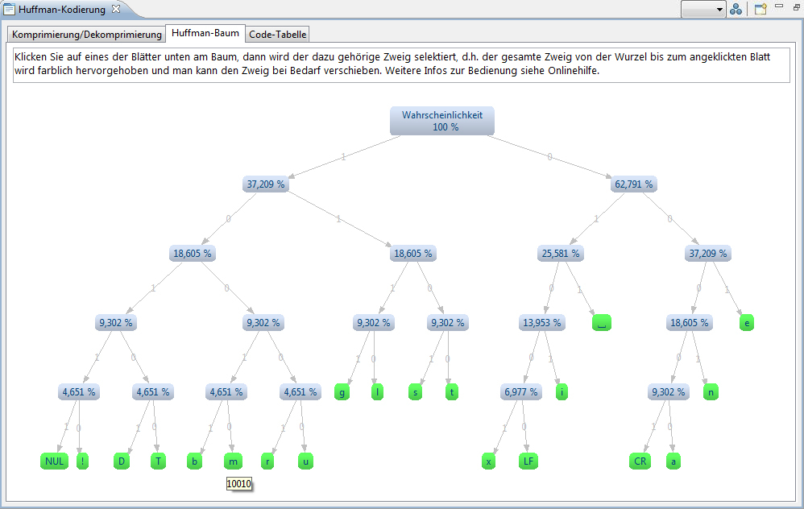
Beim Klick auf eines der Blätter wird der dazu gehörige Zweig selektiert: Der gesamte Zweig von der Wurzel bis zum angeklickten Blatt wird farblich hervorgehoben und man kann den Zweig bei Bedarf verschieben. Das Codewort des ausgewählten Blattes wird oben angezeigt.
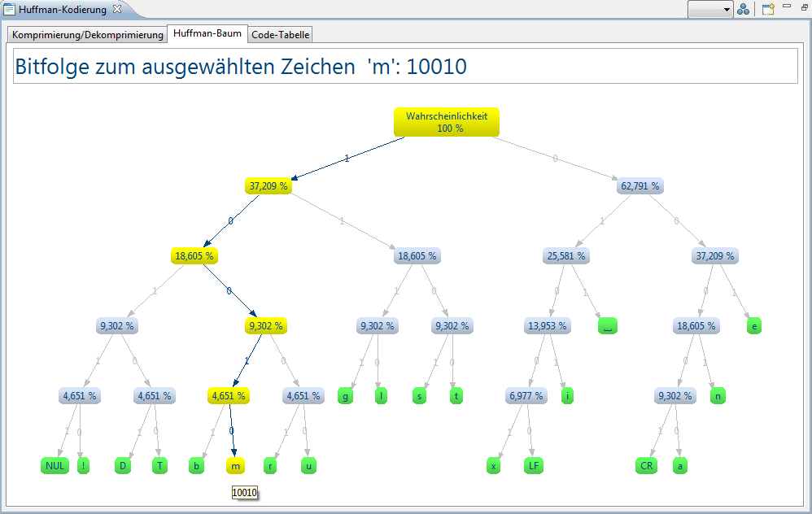
Das Layout des Huffman-Baums kann durch Klicken auf das -Icon gewechselt werden. Es befindet sich
in der rechten oberen Ecke des Fensters. Das Standard-Layout ist das TreeLayout.
Weitere verfügbare Layouts sind: HorizontalTreeLayout
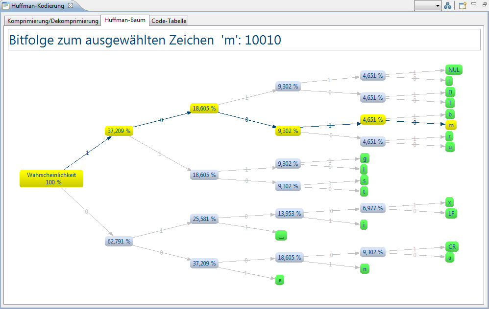
und RadialLayout
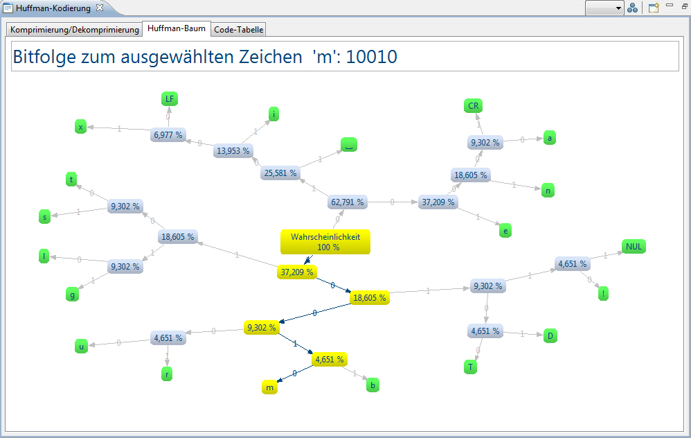
Für den graphischen Aufbau des Huffman-Baums wurde das ZEST Framework verwendet. ZEST ist ein Eclipse-Toolkit mit einer Reihe von Visualisierungskomponenten. Mit ZEST ist es moöglich, Graphen auf einfache Weise darzustellen. 3) Auf der dritten Registerkarte wird die Code-Tabelle angezeigt. Dabei wird für jedes ASCII-Zeichen, das in dem Eingabetext vorkommt, das dazu gehörige Codewort angezeigt. Beim Klick auf den Button Zweig anzeigen, wechselt die Ansicht auf die Registerkarte Huffman-Baum und selektiert den dazu passenden Zweig.
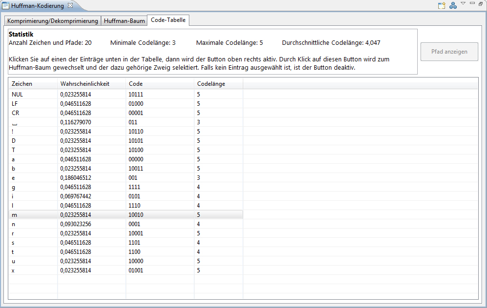
4) Bedeutung der Icons in der Menüleiste
 -Icon (Neustart) kehrt man zum Initial-Zustand des
Plug-ins zurück und kann den Algorithmus von vorne beginnen.-Icon skaliert werden.
-Icon (Neustart) kehrt man zum Initial-Zustand des
Plug-ins zurück und kann den Algorithmus von vorne beginnen.-Icon skaliert werden.5) Quellen